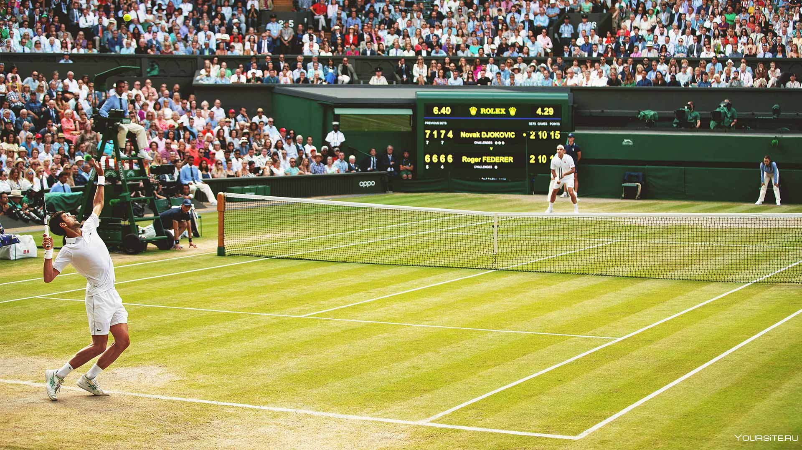

НОВОСТИ ТЕННИСА
Селиваненко: у Сафиуллина хороший шанс проявить себя в матче с Джоковичем
Вице-президент Федерации тенниса России (ФТР) Алексей Селиваненко высказался о предстоящем матче второго круга турнира серии «Мастерс» в Монте-Карло (Монако), в котором российский теннисист Роман Сафиуллин сыграет с первой ракеткой мира представителем Сербии Новаком Джоковичем. Селиваненко подчеркнул, что предстоящая игра будет хорошим шансом для россиянина проявить себя. «У Романа хороший шанс проявить себя. Новак сейчас, по всей видимости, не в самом идеальной кондиции. Но в то же время все знают, что Джокович в любом состоянии остаётся самим собой. Для Сафиуллина это первый матч против Новака, такие игры всегда запоминаются», — приводит слова Селиваненко Metaratings.by. Напомним, матч Сафиуллина с Джоковичем состоится сегодня, 9 апреля. Поединок поставлен третьим запуском на центральном корте и начнётся не раньше 15:00 мск.
Иванишевич: Алькарас и Синнер невероятные игроки, но я всегда буду ставить на Джоковича
Горан Иванишевич, бывший тренер первой ракетки мира сербского теннисиста Новака Джоковича, высказался об итальянском спортсмене Яннике Синнере и испанце Карлосе Алькарасе. «Алькарас и Синнер невероятные теннисисты. Сейчас я должен признать, что Янник — самый крутой теннисист в мире. Он выиграл 25 из 26 матчей. Синнер просто невероятный, он великолепно играет. Они с Карлосом разные игроки, но на обоих очень приятно смотреть. Им предстоит провести много отличных матчей. Но если появится Новак, я всегда буду ставить на него», — приводит слова Иванишевича Sportskeeda со ссылкой на The Tennis Podcast. Напомним, Джокович выступит на турнире серии «Мастерс» в Монте-Карло (Монако). Сегодня, 9 апреля, серб проведёт матч второго круга соревнований с российским теннисистом Романом Сафиуллиным.
предыдущая следующая